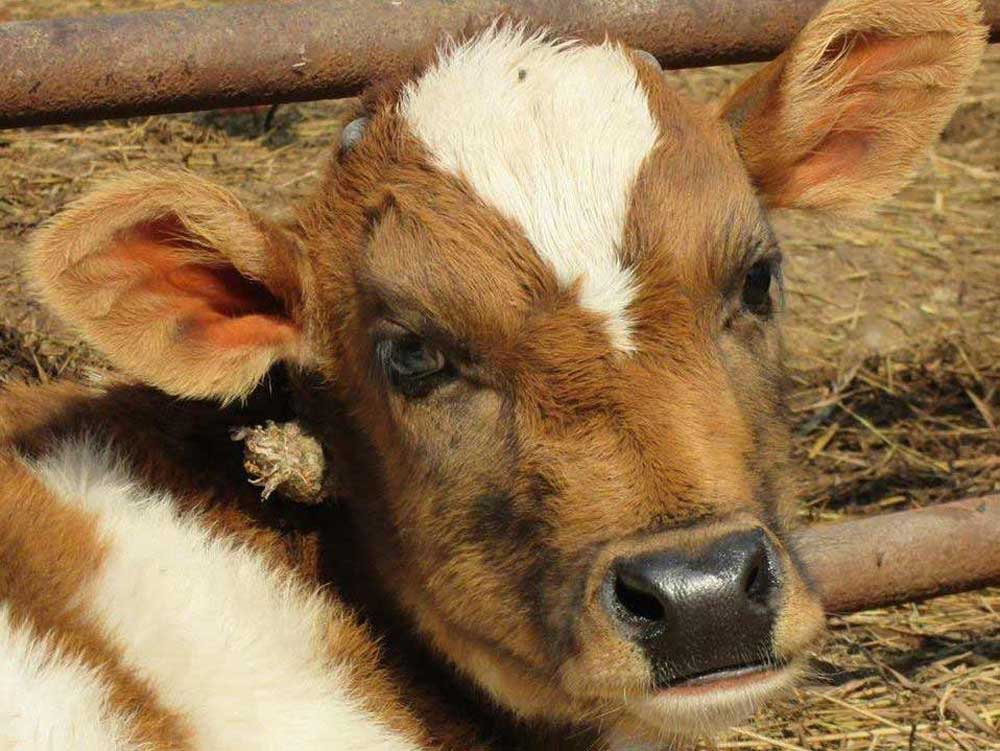
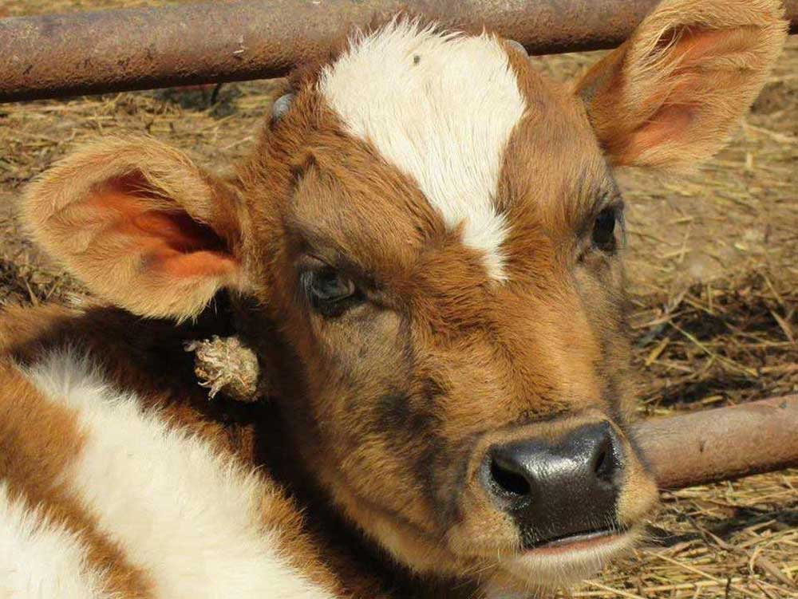
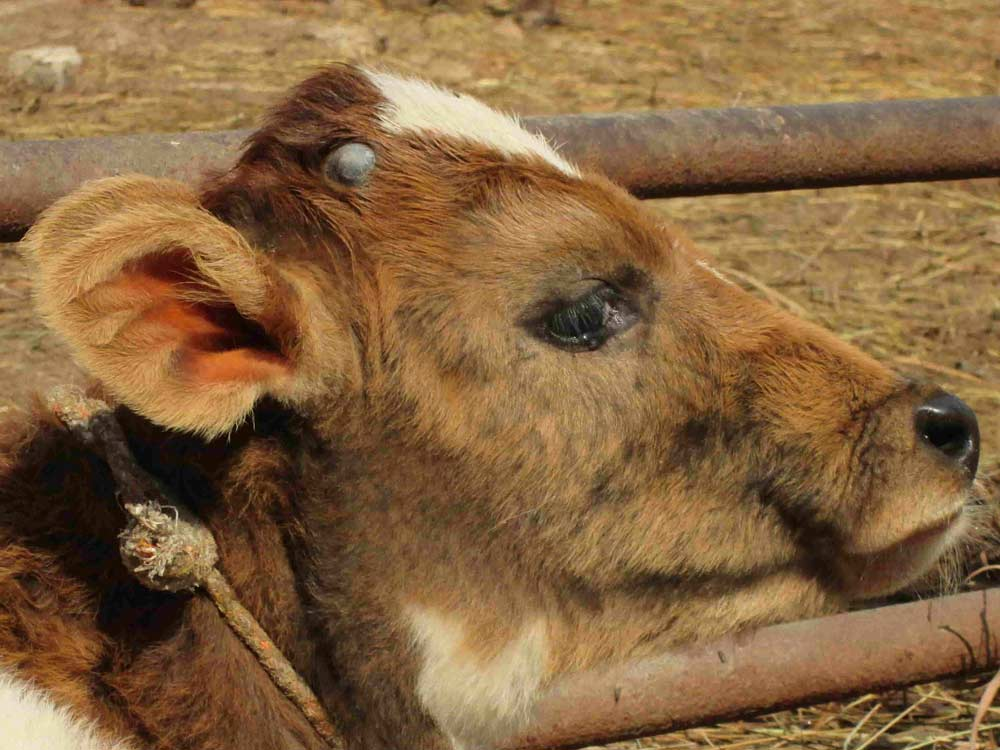
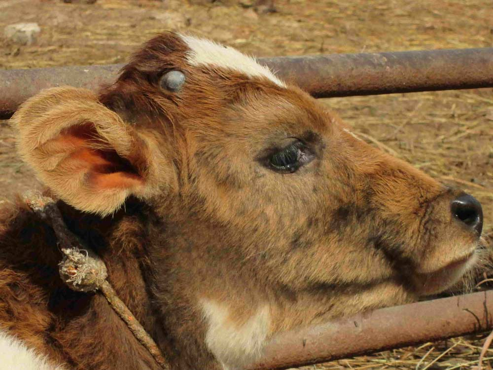

 

Rescue Street Cows
Infant, injured and wounded cattle are seen frequently on the roads of Kathmandu valley these days. They are found to be searching for food in all the areas possible including the garbage dumps. Many infants and young cattle, hit by vehicles are seen to be lying injured in the roads, helpless, between life and death in the maddening crowd. Much frightful is the sight of stray dogs attacking and trying to eat the injured cows.
In this context, the campaign to rescue and save the street cows was initiated. It was developed into an organization later on.
This organization has been rescuing the injured cows and cattle, medicating them, returning them their sound health and finally providing the fit and able cattle to the needy people of the needy areas.